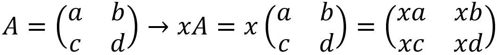
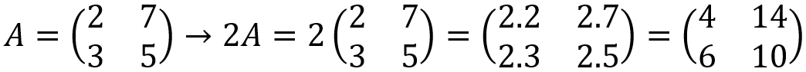

PERKALIAN MATRIKS
Kita juga dapat melakukan operasi perkalian pada matriks. Perkalian matriks mencakup dua hal, yaitu perkalian matriks dengan bilangan riil dan perkalian matriks dengan matriks.
Perkalian matriks dengan bilangan riil
Setiap elemen pada perkalian matriks dengan bilangan riil x dikalikan dengan x. Ordo pada perkalian matriks dengan bilangan riil tetap sama.
Contoh untuk perkalian matriks dengan sebuah bilangan riil bisa teman-teman lihat di bawah ini.
Untuk perkalian matriks dengan bilangan riil, kita kalikan bilangan riil ke setiap elemen matriks. Maka, elemen a11 yang bernilai 2 dikalikan dengan bilangan riil 2 sehingga hasilnya adalah 4; elemen a12 yang bernilai 7 dikalikan dengan bilangan riil 2 sehingga
hasilnya adalah 14; elemen a21 yang bernilai 3 dikalikan dengan bilangan riil 2 sehingga hasilnya adalah 6; dan elemen a11 yang bernilai 5 dikalikan dengan bilangan riil 2 sehingga hasilnya adalah 10. Setelah itu, kalian dapet deh hasil dari perkalian matriks A dengan bilangan riil, yaitu 2.